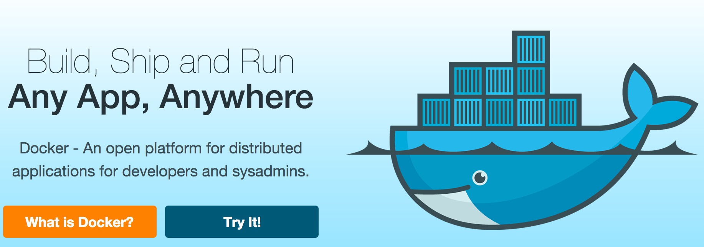
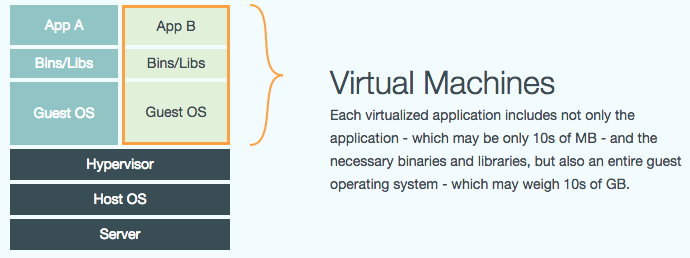
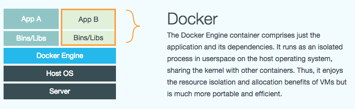

Introduction to Docker
Mateusz Szczap & Wojtek Sielski
mobile.de - eBay Inc. subsidiary
What is docker?
What is docker?
- basic management of linux images and containers
- allows pulling remote images
- allows bootstrapping linux containers
- allows stopping containers
What is docker?
- checking logs on fly
- attaching inside a running container
- pushing images to remote servers
- helps developers build and ship application faster
Per analogy docker is:
- commit and push in similar way like git
- lots of prebuilt images available at public Docker Hub (like Github)
- allows to exchange environments like with code
- able to run portable containers
- makes isolation like chroot on steroids
What is a linux container?
advanced isolation environment
with isolation level on:
- filesystem
- network
- memory
- cpu
Per analogy docker to VMware:
- containerisation is not a virtualisation
- docker's isolation is more lightweight than virtualisation
- docker doesn't use Hypervisor, but a one - common for all containers - kernel (>=3.9)
Picture is 1000 words:
 Demo is 10.000 words:
Wrap up